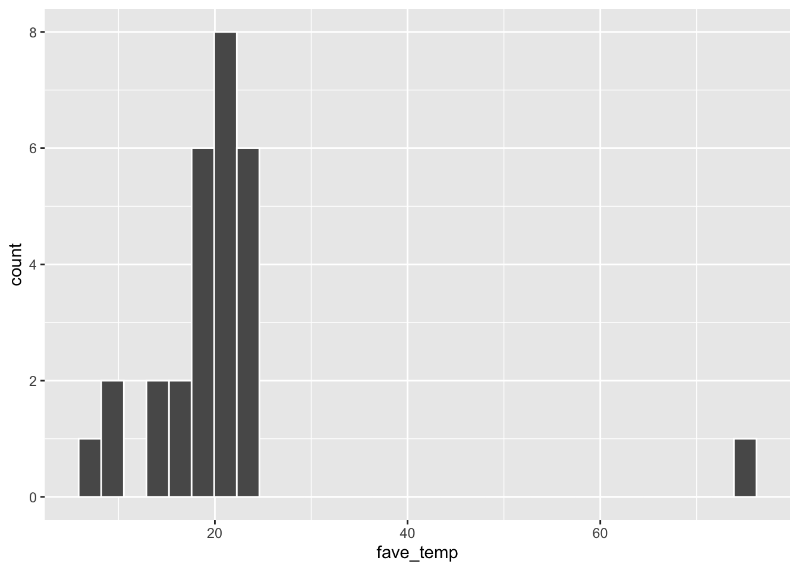
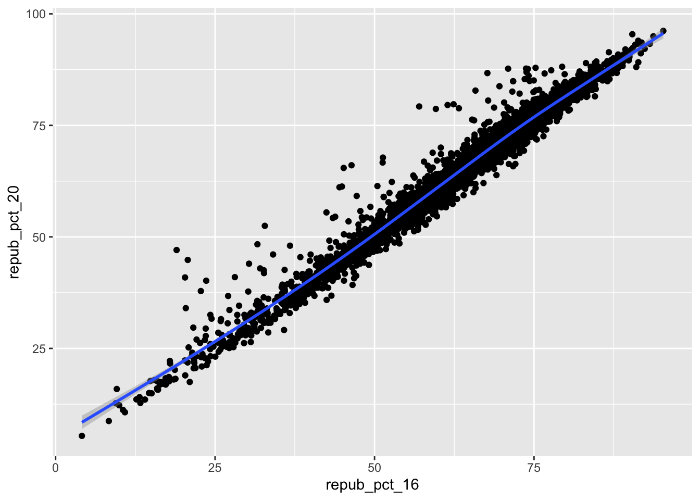
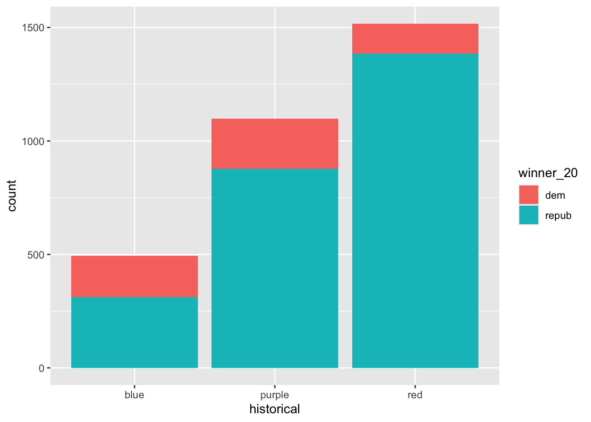
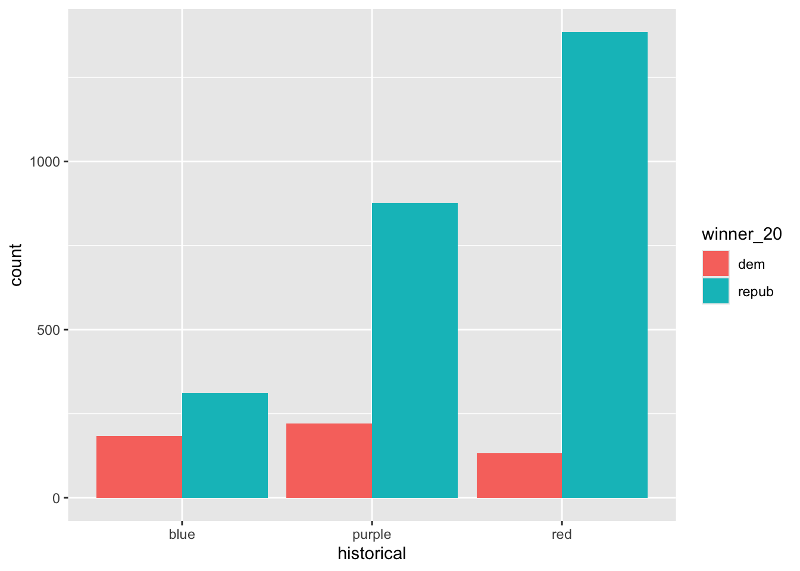

── Attaching core tidyverse packages ──────────────────────── tidyverse 2.0.0 ──
✔ dplyr 1.1.4 ✔ readr 2.1.5
✔ forcats 1.0.0 ✔ stringr 1.5.1
✔ lubridate 1.9.4 ✔ tibble 3.2.1
✔ purrr 1.0.2 ✔ tidyr 1.3.1
── Conflicts ────────────────────────────────────────── tidyverse_conflicts() ──
✖ dplyr::filter() masks stats::filter()
✖ dplyr::lag() masks stats::lag()
ℹ Use the conflicted package (<http://conflicted.r-lib.org/>) to force all conflicts to become errors12 Bviz
13 Import data
14 How many students have now filled out the survey?
15 What type of variables do we have?
Code
`stat_bin()` using `bins = 30`. Pick better value with `binwidth`.
Exercises #Exercise 0
Code
state_name state_abbr historical county_name county_fips total_votes_20
1 Alabama AL red Autauga County 1001 27770
2 Alabama AL red Baldwin County 1003 109679
3 Alabama AL red Barbour County 1005 10518
4 Alabama AL red Bibb County 1007 9595
5 Alabama AL red Blount County 1009 27588
6 Alabama AL red Bullock County 1011 4613
repub_pct_20 dem_pct_20 winner_20 total_votes_16 repub_pct_16 dem_pct_16
1 71.44 27.02 repub 24661 73.44 23.96
2 76.17 22.41 repub 94090 77.35 19.57
3 53.45 45.79 repub 10390 52.27 46.66
4 78.43 20.70 repub 8748 76.97 21.42
5 89.57 9.57 repub 25384 89.85 8.47
6 24.84 74.70 dem 4701 24.23 75.09
winner_16 total_votes_12 repub_pct_12 dem_pct_12 winner_12 total_population
1 repub 23909 72.63 26.58 repub 54907
2 repub 84988 77.39 21.57 repub 187114
3 repub 11459 48.34 51.25 dem 27321
4 repub 8391 73.07 26.22 repub 22754
5 repub 23980 86.49 12.35 repub 57623
6 dem 5318 23.51 76.31 dem 10746
percent_white percent_black percent_asian percent_hispanic per_capita_income
1 76 18 1 2 24571
2 83 9 1 4 26766
3 46 46 0 5 16829
4 75 22 0 2 17427
5 88 1 0 8 20730
6 22 71 0 6 18628
median_rent median_age
1 668 37.5
2 693 41.5
3 382 38.3
4 351 39.4
5 403 39.6
6 276 39.6
`stat_bin()` using `bins = 30`. Pick better value with `binwidth`.
- Data is skewed left
#1
#2
Code
#3 There is a positive strong relationship between support in 2020 and 20216. There are no outliers in relationship.
#4
`geom_smooth()` using method = 'gam' and formula = 'y ~ s(x, bs = "cs")'
`geom_smooth()` using method = 'gam' and formula = 'y ~ s(x, bs = "cs")'
Code
`geom_smooth()` using formula = 'y ~ x'
#5
`geom_smooth()` using method = 'gam' and formula = 'y ~ s(x, bs = "cs")'There is somewhat of a linear negative relationship between repub_pct_20 and median_rent.

There doesn’t seem to be any correlation or pattern between support and median age. Median rent is a better predictor of republican support
#6

It doesn’t do a good job of telling us anything useful #7
Code

Code

We can see that there was over 50% republican support in 2020 for each group. Historically red had greater support than each of the other groups.
#8
Code

Code

Code

Code

Code
`stat_bin()` using `bins = 30`. Pick better value with `binwidth`.
#10 Which do you like best? - Probably box plot because it illustrates data in a useful, quantatative, easy to read way
What is one pro of density plots relative to boxplots?
What is one con of density plots relative to boxplots? The y-axis is relative rather than the specific pieces of data in the set
#11
Code

Code

#12
Code

Code

Code

Code

Pro of using proportional bar plot is now the count is going up to one so it may be easier to deterimine the areas of each group
I like side by side because it’s clearer to me. The other two versions in this case make it seem as if the smaller one (dem) is larger because it is above but it is clear that it is less when side by side is used #13